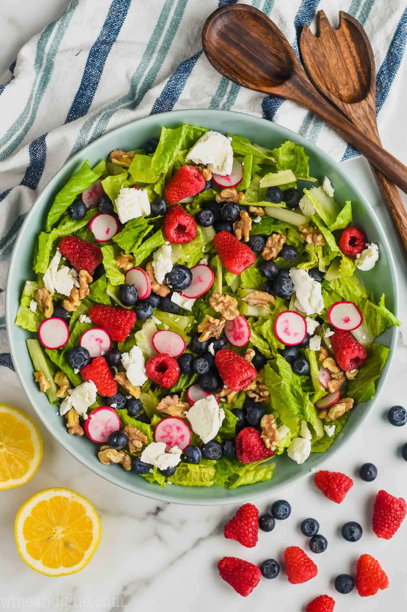

Back
Summer Salad

This Summer Salad Recipe is full of delicious fresh ingredient and made perfect with my Lemon Poppyseed Dressing. This is a fast summer salad that you will want to bring to all the summer picnics and BBQs!
Ingredients
Salad
- three heads of romaine lettuce
- small bunch of radishes
- blueberries
- raspberries
- goat cheese
- roasted walnuts
Salad Dressing
- olive oil
- lemon juice
- granulated sugar
- salt
- dry mustard
- poppy seeds
Instructions
- Combine all ingredients in a medium bowl and mix well. Season with salt and pepper to taste.
Recipe sourced from simplejoy.com